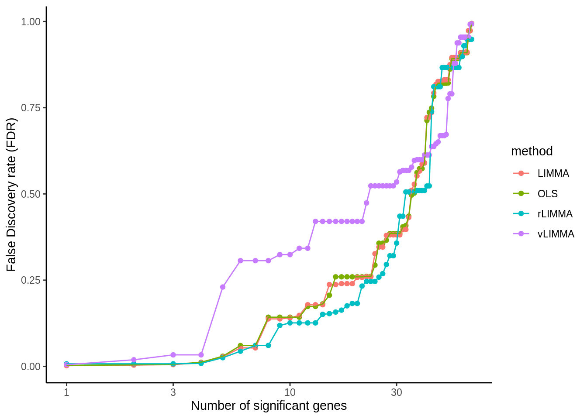
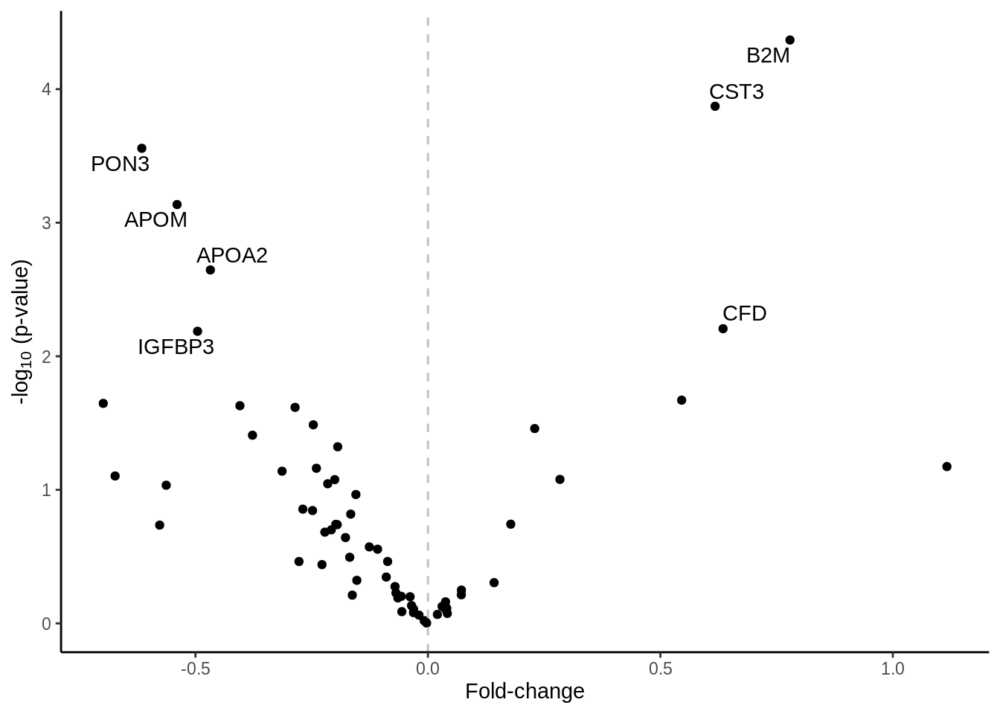
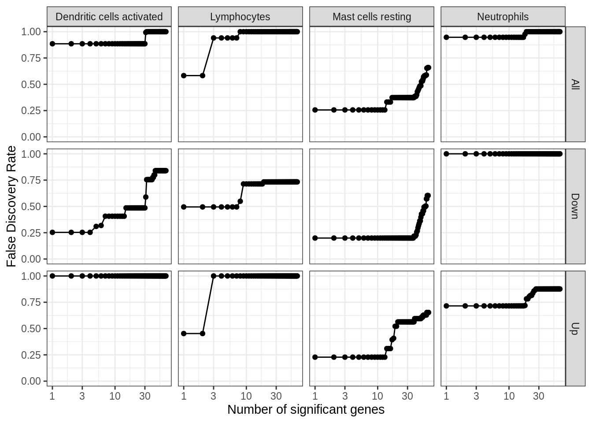

Chapter 6 Differential Expression Analysis
//TODO insert video of performing differential expression analysis using Omics Central here
6.1 Methods
6.1.1 Ordinary Least Squares
6.1.2 LInear Models for MicroArrays and RNA-Seq
6.1.2.1 LIMMA
6.1.2.2 Robust LIMMA
6.1.2.3 LIMMA VOOM (adjusts for heteroscdasticity)
6.1.3 Significance Analysis for Microarrays (SAM)
6.1.4 cell-specific Analysis for Microarrays (csSAM)
## [1] TRUE6.2 Visualizations
6.2.1 Number of differentially expressed genes

6.2.2 P-value histograms
6.2.3 MA plot

6.2.4 csSAM
